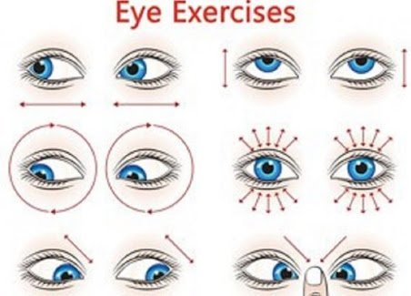

15 Best Eye Exercises To Relax And Strengthen Your Eye Muscles
2020.12.07 12:35
Toggle navigation Gym Workouts Makeup Bridal Makeup Celebrity Makeup Eye Make up Lip Make up Makeup Ideas Mehandi Designs Nail Art hair care Basic Hair Care Dandruff Dry Hair Care Hair Care Ideas Hair Care Solutions Hair Colour Hair Fall Hair Growth Hair Treatment Oily Hair Care skin care Acne Anti Ageing Beauty Secrets Dry Skin Face Care Tips Face Packs and Masks Glowing skin Homemade Tips Oily Skin Perfumes Skin Care Ideas Skin Care Problems Sunscreen hairstyle Bob Hairstyles Braid hairstyles Bridal Hairstyles Bun Hairstyles Celebrity Hairstyles Curly Hairstyles Different Hairstyles Hairstyle Trends Long Hairstyles Medium Hairstyles Short Hairstyles Teen Hairstyles Updo Hairstyles Wavy Hairstyles health & wellness Diet Tips Health Devices Healthy Food Home Remedies Ingredients and Uses Nutrition Fitness Weight Loss Weight Gain Yoga news Collaboration Fashion Brand News Celebrity News Inspiration Top 10’s Trends StyleCraze Experts Women Empowerment Relationships Gift Ideas Tools Products Reviews हिंदी
Home » Fitness » Gym Workouts
15 Eye Exercises To Relax And Strengthen Your Eye Muscles
Medically reviewed by Dr. Sudhansu Singh , PhysiotherapistJanuary 14, 2020 by Charushila Biswas , Maanasi Radhakrishnan Evidence Based
Do your eyes often feel strained? Do you constantly look at an LED screen at work, during breaks or at home? Beware! This can cause eye strain, vision problems, dry eyes, and even anxiety and headache ( 1 ), ( 2 ). Since you can’t say goodbye to your job or social media (the job of millions now), you must take out 10 minutes every day to do eye exercises. These exercises will help relieve strain, strengthen the eye muscles, enhance cognitive performance, and improve visual reaction time and the shape of your eyes ( 3 ), ( 4 ), ( 5 ). Note that there is no solid scientific evidence that eye exercises can improve vision. So, do you still require eye exercises? Yes! Swipe up to know why.
Need For Eye Exercises
More and more people today are suffering from eye fatigue and strain because of their lifestyle and career choices. Both adults and kids spend a lot of time staring at their computer screen or mobile phone. Other factors like pollution, overuse of contact lenses, and incorrect eyeglasses also strain the eyes. So, you need to do some strain-relieving exercises – after all, we only have these two precious windows to the world. Though eye exercises cannot correct short-sightedness, excessive blinking, and dyslexia, they can be of great help in aiding recovery in the following cases:
Poor focus due to weak eye muscles Lazy eye or amblyopia Crossed eyes or strabismus Double vision Astigmatism Poor 3D vision History of eye surgery History of eye injuryHere are 15 eye exercises that you can do anytime, anywhere.
Top 15 Eye Exercises You Can Do Anywhere
1. The Eye Roll
Youtube
The eye roll exercise is very effective, and when done regularly, it can help strengthen the eye muscles and enhance the shape of your eyes. So, the next time you hear something and roll your eyes, feel good about it and roll your eyes in the other direction to complete one rep. But since it’s an exercise, you must know the correct way to do it. Here’s how.
How To Do Eye Roll Exercise
Sit or stand straight. Keep your shoulders relaxed, and neck straight, and look ahead. Look to your right and then slowly roll your eyes up towards the ceiling. Roll your eyes down to your left and from there, down towards the floor. Do this in the clockwise and anti-clockwise directions.Time – 2 minutes
Sets And Reps – 2 sets of 10 reps
2. The Rub Down
Shutterstock
This is a personal favorite. You can do this exercise even while wearing contact lenses. This means that it can be done whenever you feel eye strain and need a quick, refreshing exercise. Here’s how to do it.
How To Do Rub Down Eye Exercise
Sit or stand comfortably and briskly rub your palms together until they feel warm. Close your eyes and place a palm over each eyelid. Imagine the warmth seeping into your eyes. Remember not to press down with the palms on your eyeballs.Time – 3 minutes
Sets And Reps – 1 set of 7 reps
3. The Moving Finger
Shutterstock
This exercise is prescribed by doctors for people who have poor eye muscles. Here’s how to do it correctly.
How To Do The Moving Finger Eye Exercise
Sit on a chair. Relax your shoulders, keep your neck straight, and look ahead. Take a pencil in your right hand and hold it in front of your nose. Focus on its tip. Extend your arm fully. Bring it back to the starting position.Time – 2 minutes
Sets And Reps – 1 set of 10 reps
4. The Eye Press
Shutterstock
Having a bad, stressful day at work? Here’s one exercise that will soothe your eyes and relieve stress – all in a jiffy! Here’s how to do it.
How To Do Eye Press Exercise
Sit comfortably, close your eyes, and take a deep breath. Place a finger on each eyelid and press very lightly for about 10 seconds. Release the pressure for about 2 seconds and press slightly again.Time – 1 minute
Sets And Reps – 1 set of 10 reps
5. Eye Massage
Shutterstock
This exercise reduces eye strain and dryness. Follow the steps mentioned below to do it correctly.
How To Do Eye Massage
Sit straight with your shoulders relaxed. Tilt your head back a little and close your eyes. Place your index and middle fingers gently on each eyelid. Move the right fingers in the anti-clockwise direction and left fingers in the clockwise direction. Repeat 10 times before changing the direction of the circular motion.Time – 2 minutes
Sets And Reps – 2 sets of 10 reps
6. Blink
Shutterstock
Constantly staring at the computer or mobile screen can lead to both eye and mental fatigue. In fact, it happens because we often forget to blink. Here’s an easy eye exercise to solve this problem.
How To Do Eye Blink Exercise
Sit comfortably on a chair, keep your shoulders relaxed, and neck straight, and look at a blank wall. Close your eyes. Hold for half a second and then open your eyes. Do it 10 times to complete one set.Time – 2 minutes
Sets And Reps – 2 sets of 10 reps
[ Read: 12 Yoga Exercises For Slimming Your Face ]
7. Flexing
Shutterstock
Just like you need to flex your biceps to strengthen them, you must flex your eyes to strengthen the eye muscles. Here’s how to do it.
How To Do Eye Flexing Exercise
Sit comfortably on a chair and look straight ahead. Look up without moving your neck and then look down. Do it 10 times. Then, look to your extreme right. Keep your neck straight. Look to your extreme left. Do it 10 times.Time – 3 minutes
Sets And Reps – 4 sets of 10 reps
8. Focusing
Shutterstock
This is an excellent exercise for your eyes and has the potential to resolve focusing issues. Follow these steps to do it.
How To Do Focusing Eye Exercise
Sit 5 feet away from a window, look straight, and keep your shoulders relaxed. Extend your right arm in front of you, stick your thumb out, and focus on the tip for 1-2 seconds. Without moving your hand, focus on the window for 2 seconds. Focus on a distant object out of the window for 2 seconds. Focus back on the thumb.Time – 1 minute
Sets And Reps – 2 sets of 10 reps
9. The Eye Bounce
Shutterstock
This is a fun exercise you can do at work, home, and even in bed. Here’s how to do it.
How To Do Eye Bounce Exercise
Sit, stand, or lie down. Look straight ahead. You can keep your eyes open or closed. Move your eyes up and down quickly. Do it 10 times before stopping and resting for 5 seconds.Time – 1 minute
Sets And Reps – 2 sets of 10 reps
10. Palming
Shutterstock
This is a really nice relaxing and calming exercise. Here’s how to go about it.
How To Do Palming Eye Exercise
Sit on a chair and keep your elbows on a table in front you. Cup an eye in each palm. Breathe in and breathe out. Feel the tension release. Relax. Do it for 30 seconds straight before releasing the pose.Time – 2 minutes
Sets And Reps – 4 sets
11. Trace-An-Eight
Shutterstock
All you need are a blank wall and a chair (optional), and you are all set to do this fun and effective exercise. Here’s how to do it.
How To Do Trace-An-Eight Exercise
Imagine a giant lateral (rotated sideways) number ‘8’ on a blank wall or ceiling. Trace a path along this figure with just your eyes, without moving your head. Do it 5 times.Time – 2 minutes
Sets And Reps – 4 sets of 5 reps
[ Read: 4 Best Acupressure Points For Better Eye Sight ]
12. The Sidelong Glance
Shutterstock
This is simply an exercise for healthy eyes. Just don’t creep people out by doing it in a public place. Here’s how to do it.
How To Do Sidelong Glance Exercise
Sit, lie, or stand comfortably and take a few deep breaths. Keeping your head still, try to look left as much as you can, using only your eyes. Hold your vision for about 3 seconds and look in front. Look right as much as you can and hold your vision there.Time – 2 minutes
Sets And Reps – 3 sets of 10 reps
13. Writing Messages
No, I don’t mean Post-it notes or DMs. This is an exercise that soothes the eyes and tones the eye muscles. Initially, this might seem impossible, but when you do it regularly for a few days, you will experience a great difference in the agility of your eye muscles. Here’s how to do it.
How To Do Writing Messages Eye Exercise
Look at a blank wall at least 8 feet away and imagine you are writing on it with your eyes. This makes the eye muscles move rapidly in different directions and exercises the weak ones. Do it for about 15-20 seconds.Time – 2 minutes
Sets And Reps – 2 sets
14. The Double Thumbs Up
Shutterstock
Yeah, for you! And for this eye exercise that’s so easy and effective that it will almost feel like you are doing nothing. But let me tell you, its impact on the eye muscles is like no other exercise on this list.
How To Do Double Thumbs Up Exercise
Sit comfortably, keep your shoulders relaxed, and neck straight, and look ahead. Hold both your thumbs at arm’s length, directly in front of your eyes. Focus your vision on the right thumb for about 5 seconds. Shift your focus to the space between the two thumbs, preferably at a distant object, for another 5 seconds. Finally, shift your gaze to the left thumb and focus on it for 5 more seconds, back to the space between the two thumbs, and then the right thumb.T i me – 2 minutes
Sets And Reps – 3 sets of 5 reps
15. Treat The Eyelids
Shutterstock
This exercise is based on yoga. It is extremely relaxing and stress-relieving. It also helps get rid of headache that is caused due to eye strain. Here’s how you should do it.
How To Do Treat The Eyelids Exercise
Sit comfortably and massage the lower eyelids very gently with your ring fingers. Start with the inner edge of the lower eyelid and gradually move outwards. You can go on to massage the eyebrows in a similar fashion after finishing with the lower lids.Time – 5 minutes
Sets And Reps – 5 sets of 10 reps
These are the 15 best effective exercises that will help strengthen and relax the eye muscles. Apart from these exercises, here are a few tricks to get relief from eye strain.
Other Effective Eye Strain Relievers
Hot and Cold CompressesThis can be a great end to a hard day at work. Take a bowl of hot water and another of cold water. Dip and lightly squeeze one hand towel or washcloth in each bowl. First, place the hot compress on your eyes and eyebrows. Feel the warmth and savor it for about 5 seconds and then switch to the cold compress for 5 seconds. Repeat at least 5 times.
Take A NapSleeping or taking a short nap is the best way to relax and rejuvenate your eyes. In fact, taking power naps can improve your productivity and enhance brain function. So, give your eyes some true rest. Also, do not sleep or wake up to laptops or mobile phones. Keep them away, close your eyes, relax, and fall asleep.
Doing all this helps, but you must also eat healthy and follow good hygiene to enhance your eye health. Take a look at a few tips for good eye health.
Tips For Good Eye Health
Shutterstock
Here’s what you must eat and avoid to keep your eyes healthy.
Increase your intake of beta-carotene and lycopene-rich foods or take vitamin A – rich supplements . Maintain good hygiene of the eyes by washing them properly with cool water or rose water every day. Rose water is effective in reducing eye strain and itching, especially in summers. Avoid touching the eyes without washing your hands. Keep a check on the condition of your contact lenses . Avoid too much sun exposure and try to wear UV protection sunglasses or a hat when you venture out in the sun.There are also a few other things that you must be careful about. Take a look at the next section to keep your eyes safe and healthy.
Things To Remember
In case you suffer from short-sightedness or farsightedness, visit your eye doctor regularly and replace old contact lenses as directed by him/her. If you contract any allergy or eye illnesses like a stye, pink eye, , do not self-medicate. Visit a doctor promptly. Eye exercises cannot reverse any eyesight problem, so before subscribing to any company that promises to do so, talk to your doctor.To conclude, these exercises for eyes are simple to do and easy to remember. They can be done at home or work during a few minutes of free time. Stop making excuses. Your eyes are Nature’s most special gift, and you need to preserve them to maintain your connection with the world. So, keep ’em rolling! Cheers!
Expert’s Answers For Readers’ Questions
If I do these exercises, will I still need to wear glasses?
Yes. Eye exercises don’t treat any eye problems. They only strengthen and relax your eye muscles and may prevent further degeneration of the problem.
Could eye exercises help fix an esotropic, half-blind right eye?
No. You must seek a doctor’s help immediately.
Is closing my eyes tightly and opening them a good exercise for my eye muscles?
Do not close your eyes too tight. It may increase the strain and might even cause headache. Do a few exercises from the list above for relief.
Can you strengthen the eye muscles?
Yes, if you train your eyes regularly, you can strengthen your eye muscles. If you have some infection or condition, you must talk to a doctor first.
How do you make your eyes look bigger?
Do the side to side, up down, and eye roll exercises to make your eyes look bigger.
Recommended Articles:
Yoga For Eyes – Improve Your Eyesight With These Easy Exercises 3 Best Eye Exercises For Astigmatism 15 Foods To Maintain And Protect Your Eyesight Naturally 5 Yoga Exercises To Get Rid Of Puffy Eyes 10 Best Eye Massagers Was this article helpful? Yes NoRelated
The following two tabs change content below. Latest Posts BioLatest posts by Maanasi Radhakrishnan ( see all )
How To Remove Hair Color With Baking Soda? - July 20, 2017 33 Marvelous Benefits Of Jaggery For Skin And Health - August 31, 2015 Is Prune Juice Effective For Weight Loss? - August 10, 2015 8 Amazing Health Benefits Of Semolina Flour - August 7, 2015 6 Best Vipassana Centers In Hyderabad - August 6, 2015Maanasi Radhakrishnan
I have been an ardent book lover since childhood. I have always had a penchant to writing, and enjoy simplifying the most complex of ho-hum subjects and making them interesting reads!When not writing, I also enjoy travelling, and particularly wish to trot the globe someday!LATEST ARTICLES
9 Amazing Benefits Of Capoeira Workout To Strengthen Your Body 21 Best Ab Exercise Equipments You Can Try 4 Amazing Benefits Of Tuck Jumps Workout On Your Body 13 Effective Hand Exercises To Include In Your Workout For Stronger Hands 5 Best Chair Cardio Exercises To Burn Calories 5 Simple Split Stretches For Beginners How To Get Rid Of Cankles - Diet, Exercises And Tips How To Get A Toned Body At Home – 21 Best Bodyweight Exercises Without Equipment Best Fat-Burning 10 Minute Ab Workout For A Flat BellyMost Popular
Best Fat-Burning 10 Minute Ab Workout For A Flat Belly Heavy Bag Workout – What Is It And What Are Its Benefits? What Is Ballistic Stretching? Should You Do It Before Exercise? 6 Amazing Benefits Of Ab Circle Pro Workout Was this article helpful? Yes No About Us Advertise With Us Disclaimer Report Violation Image Usage Policy Privacy Policy Contact Us Terms Of Use Health Topics Beauty TopicsFor Queries Contact
info@stylecraze.com
Follow us
Our Sister Sites
MomJunction The BridalBox Skinkraft Vedix Product Reviews Stylecraze(German)Copyright © 2011 - 2020 Incnut Digital . All rights reserved.
StyleCraze provides content of general nature that is designed for informational purposes only. The content is not intended to be a substitute for professional medical advice, diagnosis, or treatment. Click here for additional information .
XStyleCraze believes in credibility and giving our readers access to authentic and evidence-based content. Every article goes through multiple reviews to ensure this.
Our stringent editorial guidelines allow us to cite only from reputed research institutions, academic journals, medically established studies, and highly regarded media and news agencies. If there is any lack of sufficient evidence, we make sure we mention it.
If you discover any discrepancy in our content, we welcome you to write to us. Your feedback helps us serve you better and maintain a long-term relationship with the most important people in our business – you.
